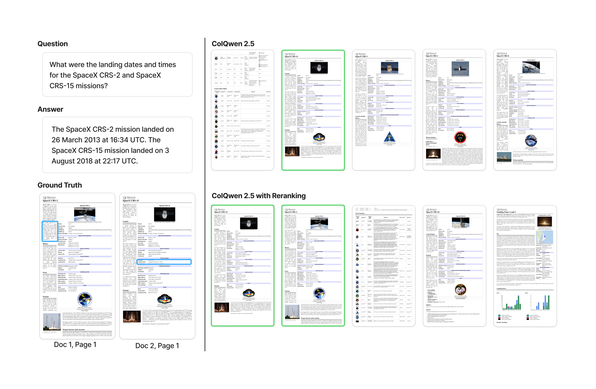
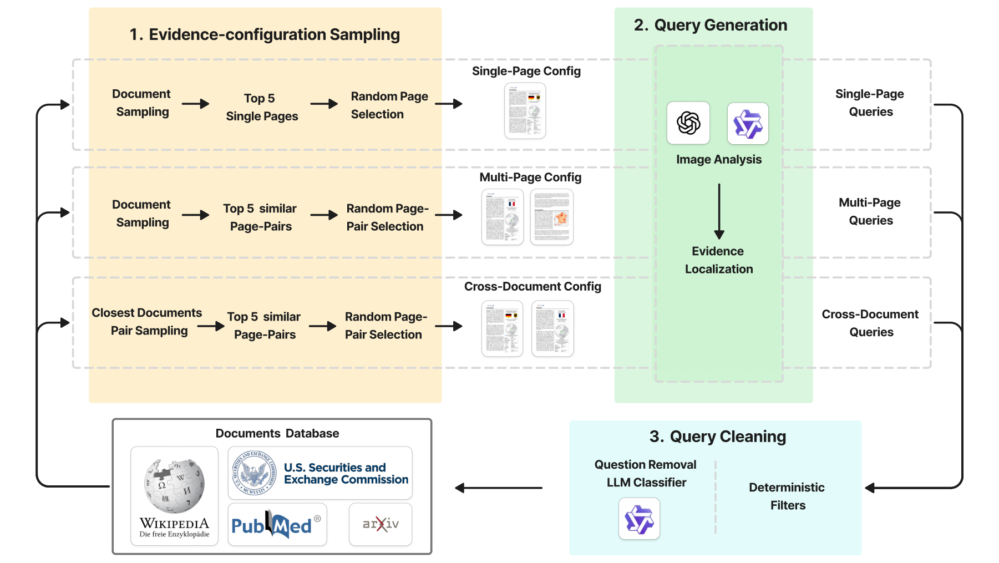

Abstract
Vision-based document retrieval has improved rapidly, but current evaluation settings still emphasize short documents and single relevant pages. This leaves an important gap between leaderboard performance and realistic long-document retrieval, where the evidence needed to answer a query may span multiple pages or even multiple documents. We present VL-DocIR, a page-level benchmark for evidence-complete visual long-document retrieval. VL-DocIR is built from 29,641 HTML-born documents rendered into 388,548 page images from Wikipedia, arXiv, PubMed, and SEC proxy statements. It contains 271,760 queries across 23 domains and six evidence structures, covering single-page, within-document multi-page, and cross-document evidence configurations. Evidence annotations are grounded to rendered pages and HTML element identifiers, and queries are filtered with a cleaning pipeline targeting clarity, correctness, closedness, and the absence of explicit layout references. We evaluate leading single-vector and multi-vector visual retrievers together with diagnostic retrieval settings such as document-context scoring, query splitting, reranking, and round-robin ensembles. The strongest evaluated configuration reaches 69.3 nDCGAll@10 and 80.6 RecallAll@10 under structure-balanced Macro evaluation, but source- and evidence-structure breakdowns show that cross-document retrieval remains substantially harder than single-page retrieval, and that document-context scoring is especially helpful for within-document multi-page queries. VL-DocIR exposes these failure modes and provides a more demanding target for visual long-document retrieval.
Benchmark
Each query in VL-DocIR requires one or more evidence pages. A retriever ranks pages from a corpus of visually rich long documents and succeeds when it recovers the entire evidence set.
The corpus contains 29,641 documents and 388,548 rendered pages from Wikipedia, arXiv, PubMed and SEC proxy statements. The 271,760 queries cover 23 domains and six evidence structures.

We generate questions and answers from selected page images and map the evidence element identifiers to rendered pages and bounding boxes. We filter queries for clarity, answer correctness or plausibility, closedness, and the absence of layout references, retaining 271,760 of 388,389 generated queries.
| Evidence structure | Retrieval target | Queries |
|---|---|---|
| Page-Single | One evidence element on one page | 86,196 |
| Page-Multi | Multiple evidence elements on one page | 120,624 |
| Doc-Adjacent | Adjacent pages in one document | 11,972 |
| Doc-Near | Nearby non-adjacent pages in one document | 3,392 |
| Doc-Far | Far-apart pages in one document | 2,563 |
| Cross-Doc | Pages across different documents | 47,013 |
Evidence-Complete Evaluation
At evaluation time, a retriever receives only the question and ranks pages from the full corpus. For a query q, let E(q) be its ground-truth evidence-page set and Rk(q) the retrieved top-k page set. Completion requires every page in E(q) to appear in Rk(q).
RecallAll@k(q) = 𝟙[E(q) ⊆ Rk(q)]
nDCGAll@k(q) = RecallAll@k(q) · nDCG@k(q)
nDCG uses binary relevance for evidence pages. We use structure-balanced Macro for the main comparison: we average query scores within each evidence structure, then give the six means equal weight. Micro is the mean over all queries.
Retrieval Results
We evaluate single-vector and multi-vector visual retrievers, OCR-BM25, OCR-dense with BGE-M3, DOM-BM25, and visual–text hybrids. All methods search the full corpus of 388,548 pages.
| Model / setting | Macro · primary | Micro | ||
|---|---|---|---|---|
| nDCGAll@10 | RecallAll@10 | nDCGAll@10 | RecallAll@10 | |
| ColQwen3 | 63.20 | 72.42 | 72.15 | 81.24 |
| ColNomic | 61.82 | 71.76 | 70.68 | 81.24 |
| ColNomic (Ctx) | 66.03 | 78.19 | 70.07 | 82.26 |
| ColNomic (Rerank) | 65.00 | 74.62 | 73.76 | 83.11 |
| ColNomic (Ensemble) | 69.28 | 80.64 | 75.64 | 86.23 |
| OCR-BM25 | 50.24 | 61.69 | 58.26 | 72.34 |
| OCR-dense (BGE-M3) | 19.35 | 24.70 | 23.86 | 31.12 |
| DOM-BM25 | 46.96 | 57.44 | 53.07 | 65.72 |
| Ctx + OCR-BM25 (RRF) | 65.13 | 78.67 | 69.75 | 84.24 |
| Rerank + OCR-BM25 (RRF) | 61.86 | 74.39 | 69.34 | 83.30 |
Scores (%) at k = 10. ColNomic (Ensemble) combines reranked, context, and base lists by ordered round-robin fusion. The visual–text hybrids use equal-weight RRF with OCR-BM25. DOM-BM25 uses native HTML text.
ColNomic (Ensemble) achieves 69.28 nDCGAll@10 and 80.64 RecallAll@10 under Macro. Adding OCR-BM25 to ColNomic (Ctx) raises Macro RecallAll@10 from 78.19 to 78.67, while nDCGAll@10 falls from 66.03 to 65.13.
All 19 evaluated configurations at k = 10
| Model / setting | Macro · primary | Micro | ||
|---|---|---|---|---|
| nDCGAll@10 | RecallAll@10 | nDCGAll@10 | RecallAll@10 | |
| ColSmol 500 | 47.33 | 58.15 | 56.58 | 69.81 |
| ColModernVBERT | 44.29 | 54.35 | 53.20 | 65.96 |
| GME Qwen2-VL | 55.10 | 67.34 | 62.11 | 76.22 |
| Jina V4 SV | 48.03 | 60.24 | 55.10 | 70.00 |
| Jina V4 MV | 59.59 | 70.77 | 67.98 | 80.03 |
| ColQwen3 | 63.20 | 72.42 | 72.15 | 81.24 |
| ColPali v1.3 | 39.41 | 49.13 | 47.85 | 60.26 |
| ColPali v1.3 (Rerank) | 51.12 | 57.16 | 61.33 | 67.17 |
| ColQwen2.5 | 56.72 | 67.23 | 65.51 | 77.04 |
| ColQwen2.5 (Rerank) | 62.88 | 71.62 | 71.94 | 80.36 |
| ColNomic | 61.82 | 71.76 | 70.68 | 81.24 |
| ColNomic (Ctx) | 66.03 | 78.19 | 70.07 | 82.26 |
| ColNomic (Rerank) | 65.00 | 74.62 | 73.76 | 83.11 |
| ColNomic (Ensemble) | 69.28 | 80.64 | 75.64 | 86.23 |
| OCR-BM25 | 50.24 | 61.69 | 58.26 | 72.34 |
| OCR-dense (BGE-M3) | 19.35 | 24.70 | 23.86 | 31.12 |
| DOM-BM25 | 46.96 | 57.44 | 53.07 | 65.72 |
| Ctx + OCR-BM25 (RRF) | 65.13 | 78.67 | 69.75 | 84.24 |
| Rerank + OCR-BM25 (RRF) | 61.86 | 74.39 | 69.34 | 83.30 |
Results (CSV) · nDCG, Recall, nDCGAll, and RecallAll at k ∈ {3, 5, 10}, with Macro and Micro aggregation.
Annotation Validation
We manually reviewed 800 entries across all 24 source × evidence-structure combinations, with 50 Cross-Doc entries and 30 entries from each other structure per source. 746/800 (93.25%) were fully correct (nominal 95% Wilson interval: 91.3–94.8%). Cross-Doc correctness was 88.5%.
The 54 entries with issues include 13 query-formulation errors, 20 incorrect evidence sets, 17 sets with an unnecessary evidence page, and four queries without directly retrievable positive evidence. These rates are measured before adjudication. The full audit is available in the dataset card.
Dataset
VL-DocIR is available on Hugging Face, including rendered page images, queries, evidence annotations, source HTML, and document metadata. Request access on the dataset page.
BibTeX
@inproceedings{ott2026vldocir,
title = {VL-DocIR: A Benchmark for Vision-Based Long Document Information Retrieval},
author = {Ott, Simon and Chen, Yufan and Liu, Ruiping and Zheng, Junwei and
Wei, Jiale and Wen, Di and Peng, Kunyu and Zhang, Jiaming and
Stiefelhagen, Rainer},
booktitle = {Advances in Neural Information Processing Systems},
year = {2026},
url = {https://openreview.net/forum?id=SxsberZw0W}
}